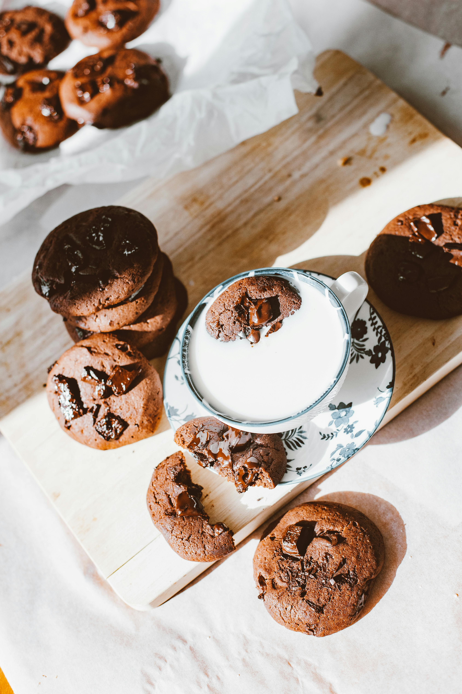
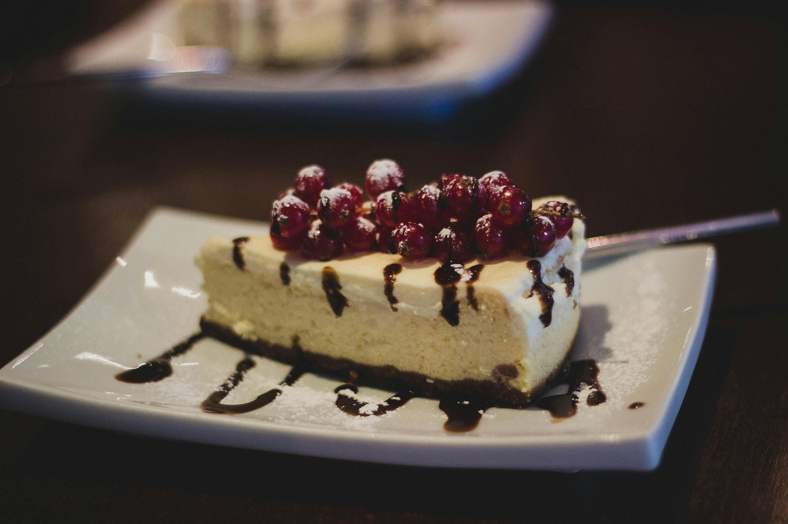
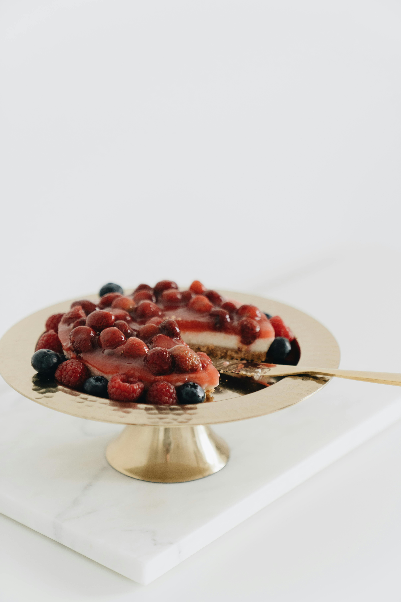

Postres Saludables
¡Bienvenidos!
¿Listo para endulzar tu vida de forma saludable?

¡Dale un mordisco!

Galletas de chocolate, avena con pasas y crema de cacahuate

Cheesecake de chocolate, red velvet, zanahoria y limón

Cheesecake de arándano azul, manzana, durazno y crema de plátano
Aquí encontrarás recetas deliciosas que te demostrarán que comer saludable no significa sacrificar el sabor.